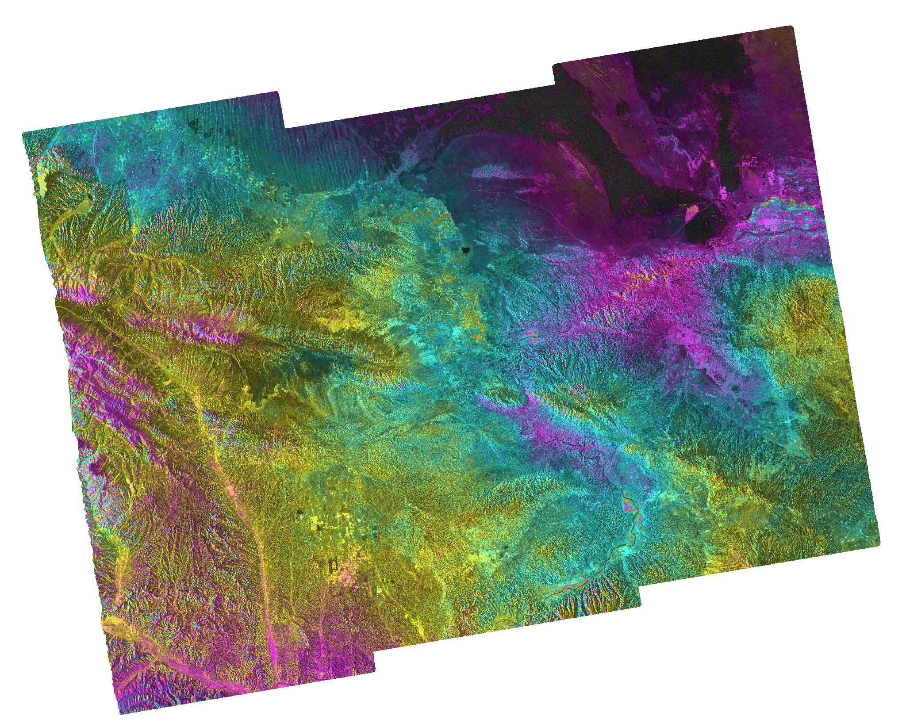
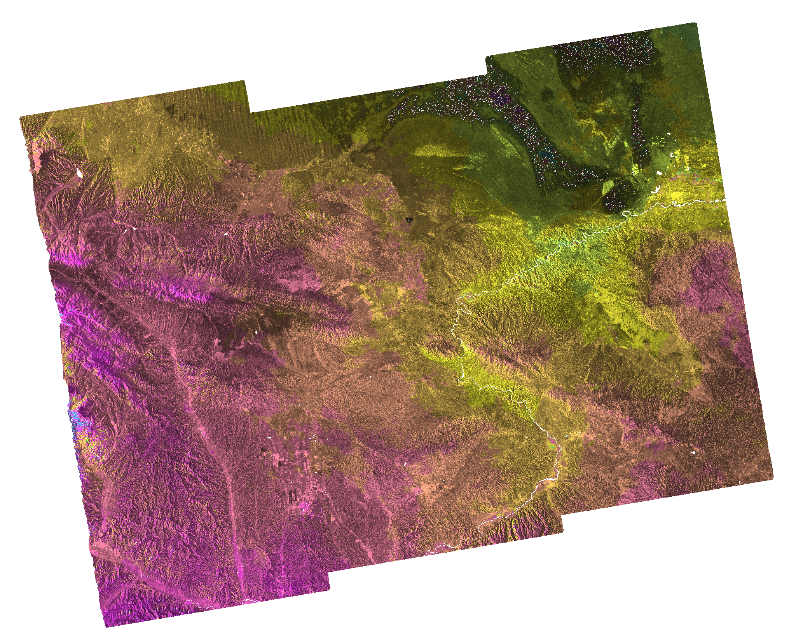

2023年12月18日23时59分，甘肃省临夏州积石山县发生 M6.2 地震，震源深度10 km。震后快速启动卫星遥感应急响应，利用欧空局 Sentinel-1A 卫星震前（2023-12-09）和震后（2023-12-21）影像进行 D-InSAR 差分子涉测量，提取同震形变场。


| 参数 | 垂直方向 | LOS方向 |
|---|---|---|
| 最大抬升 | +69.5 mm | +59.4 mm |
| 最大下沉 | -102.5 mm | -75.4 mm |
| 总形变范围 | 172.0 mm | 134.8 mm |
| 均值 | -3.8 mm | -2.8 mm |
| 标准差 | 8.9 mm | 6.7 mm |
| P5 百分位 | -22.8 mm | -16.5 mm |
| P95 百分位 | +7.2 mm | +6.0 mm |
成功获取 M6.2 积石山地震同震形变场。垂直方向最大形变范围达 172 mm（-102.5 ~ +69.5 mm），LOS 方向 135 mm。形变场特征与逆冲型地震机制一致，主要形变区集中在震中附近区域。形变量级与震级匹配。
| 参数 | 值 |
|---|---|
| 卫星 | Sentinel-1A |
| 轨道 | 降轨 (轨道55, ~11:02 UTC) |
| 震前影像 | 2023-12-09 (震前 9 天) |
| 震后影像 | 2023-12-21 (震后 3 天) |
| 时间基线 | 12 天 |
| 处理方法 | HyP3 INSAR_GAMMA + 本地分析 |
| 分辨率 | 80 m |
| 形变产品 | LOS 形变 + 垂直形变 + 干涉图 |